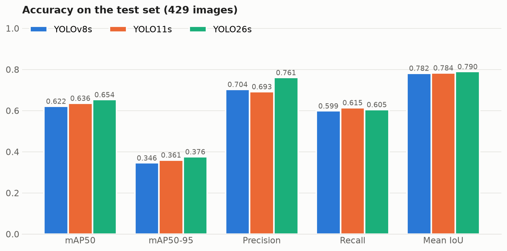
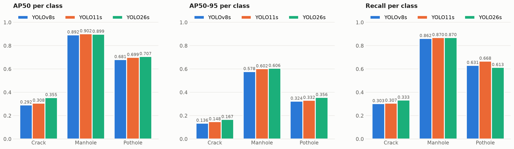
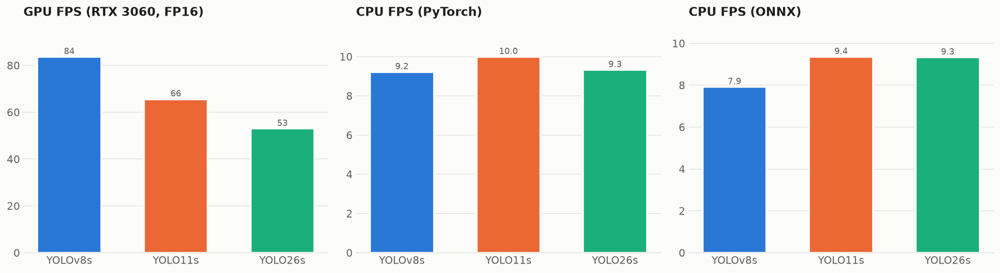
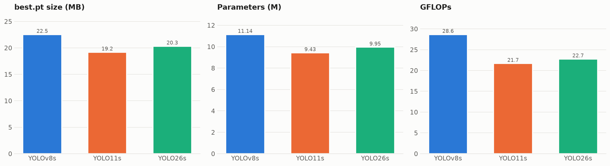
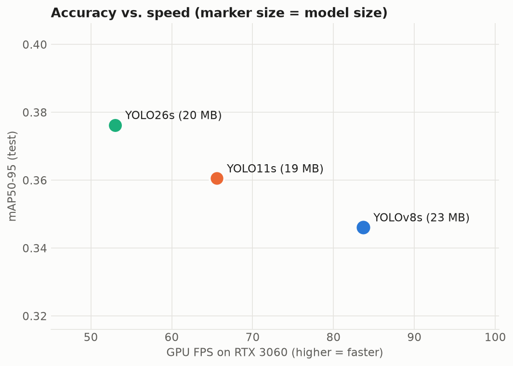
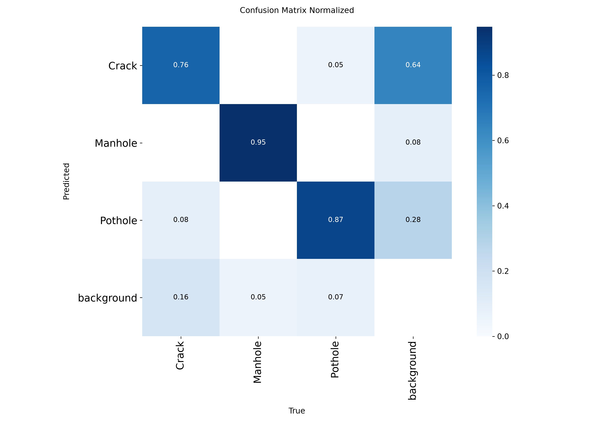
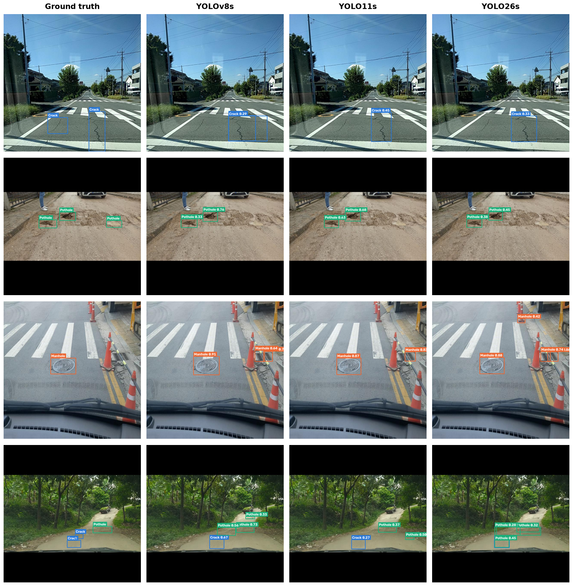
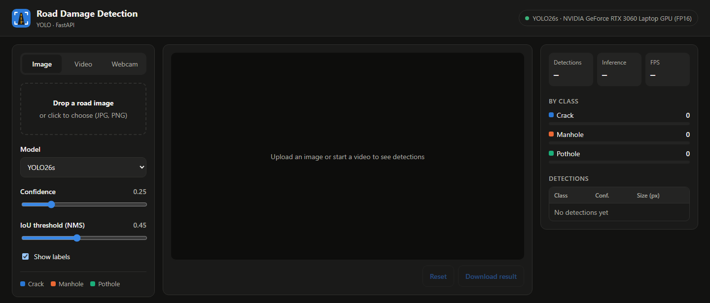

Build, compare and deploy an AI system that detects and localizes road damage in images using YOLO-based object detection. The project covers:
Detected classes: Crack, Manhole, Pothole. Manholes are not damage, but detecting them explicitly prevents the model from confusing round manhole covers with potholes.
The data is managed in a Roboflow project (project-dvd12/road-damage-eul7g). It combines road-damage images (cracks, potholes, manholes) with an additional set of manhole images to balance the classes. The project holds 4,643 images and 6,323 bounding boxes.
unlabeled and excluded with a Filter by Tag step (not deleted).manholes was renamed to Manhole (2,116 labels) to match Crack and Pothole.| Version | Resize | Offline augmentation | Split (train / valid / test) | Decision |
|---|---|---|---|---|
| v1 | Stretch to 512×512 | ×3 (flip, brightness, noise) | 3,957 / 352 / 87 | Rejected: stretching distorts crack/pothole shapes; test set too small (87) |
| v2 | Fit (black edges) 640×640 | ×3 (flip, brightness, noise) | ≈3,700 / 352 / 175 | Rejected: offline augmentation duplicates images and overlaps with YOLO's online augmentation |
| v3 (final) | Fit (black edges) 640×640 | None (online augmentation in training) | 2,592 / 820 / 429 | Used for all models |
Fit keeps the aspect ratio (letterboxing), so thin cracks are not stretched. Augmentation is applied on the fly by Ultralytics during training instead (mosaic, flips, HSV, scale, translate), which produces different variants every epoch.
| Split | Images | Boxes | Crack | Manhole | Pothole |
|---|---|---|---|---|---|
| Train | 2,592 | 4,243 | 1,601 | 1,443 | 1,199 |
| Valid | 820 | 1,290 | 425 | 481 | 384 |
| Test | 429 | 790 | 267 | 192 | 331 |
| Total | 3,841 | 6,323 | 2,293 | 2,116 | 1,914 |
The three classes are reasonably balanced (30–36% of boxes each). The split is fixed inside the Roboflow version, so all three models saw exactly the same training, validation and test images.
| Model | Generation | Params (M) | GFLOPs @640 | Pretrained weights |
|---|---|---|---|---|
| YOLOv8s | Ultralytics YOLOv8 | 11.14 | 28.6 | COCO yolov8s.pt |
| YOLO11s | Ultralytics YOLO11 | 9.43 | 21.7 | COCO yolo11s.pt |
| YOLO26s | Ultralytics YOLO26 | 9.95 | 22.7 | COCO yolo26s.pt |
All models use the same size variant (s) so the comparison reflects the architecture, not the model size. They were fine-tuned from COCO weights with an identical configuration:
| Setting | Value |
|---|---|
| Epochs / early stopping | 100 / patience 20 |
| Image size · batch | 640 · 16 |
| Optimizer | AdamW, lr0 = 0.001, lrf = 0.01 |
| Weight decay · warm-up | 0.0005 · 3 epochs |
| Seed · deterministic | 42 · yes |
| Online augmentation | Value |
|---|---|
| Mosaic (closed last 10 epochs) | 1.0 |
| Horizontal flip | 0.5 |
| HSV hue / sat / value | 0.015 / 0.7 / 0.4 |
| Scale · translate | 0.5 · 0.1 |
| Training hardware | NVIDIA Tesla T4 (Kaggle / Colab) |
Training notebooks (notebooks/): road_damage_yolov8s.ipynb, road_damage_yolo11s.ipynb, road_damage_yolo26s.ipynb (identical except for the model name). The best checkpoint (best.pt, highest validation fitness) of each run is used below.
To make the comparison fair, all three best.pt files were evaluated with one script (evaluation/evaluate.py) on the same 429 test images (never used for training or model selection) and on the same machine: NVIDIA GeForce RTX 3060 Laptop GPU (6 GB) and Intel Core i5-11400H CPU, PyTorch 2.14 + CUDA 13.0.
| Metric | How it is measured |
|---|---|
| mAP50, mAP50-95 | Ultralytics validation on the test split (IoU threshold 0.5, and averaged over 0.5–0.95) |
| Precision, Recall | Mean over classes at the confidence that maximizes F1 |
| Mean IoU | Predictions (conf ≥ 0.25) matched greedily to the same-class ground-truth box with the highest IoU (≥ 0.5); average IoU of these true positives = localization quality |
| Inference speed / FPS | Batch size 1, average over all test images (pre-process + inference + post-process). GPU in FP16, CPU in FP32, 10 warm-up images |
| Model size | best.pt file size, number of parameters, GFLOPs at 640×640 |
| Deployment efficiency | Export to ONNX; ONNX file size, CPU speed with ONNX Runtime, and test mAP of the ONNX model (accuracy kept after export) |
| Model | mAP50 | mAP50-95 | Precision | Recall | Mean IoU | GPU FPS | GPU ms | CPU FPS | ONNX CPU FPS | Size (MB) |
|---|---|---|---|---|---|---|---|---|---|---|
| YOLOv8s | 0.622 | 0.346 | 0.704 | 0.599 | 0.782 | 84 | 11.9 | 9.2 | 7.9 | 22.5 |
| YOLO11s | 0.636 | 0.361 | 0.693 | 0.615 | 0.784 | 66 | 15.2 | 10.0 | 9.4 | 19.2 |
| YOLO26s | 0.654 | 0.376 | 0.761 | 0.605 | 0.790 | 53 | 18.9 | 9.3 | 9.3 | 20.3 |
Bold = best value per column. GPU = RTX 3060 Laptop, FP16, batch 1. CPU = Intel Core i5-11400H.

| Model | Crack | Manhole | Pothole | ||||||
|---|---|---|---|---|---|---|---|---|---|
| AP50 | AP50-95 | Recall | AP50 | AP50-95 | Recall | AP50 | AP50-95 | Recall | |
| YOLOv8s | 0.292 | 0.136 | 0.303 | 0.892 | 0.578 | 0.862 | 0.681 | 0.324 | 0.631 |
| YOLO11s | 0.308 | 0.148 | 0.307 | 0.902 | 0.602 | 0.870 | 0.699 | 0.332 | 0.668 |
| YOLO26s | 0.355 | 0.167 | 0.333 | 0.899 | 0.606 | 0.870 | 0.707 | 0.356 | 0.613 |
Bold = best per column. Precision per class (Crack / Manhole / Pothole): YOLOv8s 0.585 / 0.825 / 0.701 · YOLO11s 0.560 / 0.832 / 0.686 · YOLO26s 0.628 / 0.865 / 0.790.



| Model | GPU latency (pre / infer / post ms) | CPU ms | ONNX size (MB) | ONNX CPU ms | ONNX mAP50-95 | Drop vs PyTorch |
|---|---|---|---|---|---|---|
| YOLOv8s | 1.0 / 9.2 / 1.7 | 108.5 | 44.7 | 126.2 | 0.338 | −0.008 |
| YOLO11s | 1.3 / 12.1 / 1.8 | 100.1 | 37.9 | 106.8 | 0.356 | −0.005 |
| YOLO26s | 1.3 / 15.7 / 1.9 | 107.2 | 38.2 | 107.1 | 0.374 | −0.002 |


Columns are true classes, rows are predictions. The "background" column contains false positives, the "background" row contains missed objects. For all models most false positives are cracks, and cracks are also the most frequently missed class.

A weighted score combines the requirements for a deployment app (min-max normalized; mAP50-95 40%, ONNX CPU speed 20%, recall 15%, mean IoU 10%, model size 10%, GPU speed 5%):
| Model | Weighted score | Rank |
|---|---|---|
| YOLO26s | 0.824 | 1 |
| YOLO11s | 0.683 | 2 |
| YOLOv8s | 0.050 | 3 |
The selected models are served by a FastAPI backend with a web dashboard (folder road_damage_app/).

.onnx files are supported too.GET /api/models — available models and the default (YOLO26s).POST /api/detect — image + model, conf, iou, imgsz; returns boxes, class, confidence, counts per class and timing./docs.pytest), all passing.On the RTX 3060 Laptop GPU, model inference takes about 12–19 ms per image (Table 5.3); a full request including upload and decoding takes roughly 50–90 ms in the browser, which is fast enough for interactive and video use.
road-damage-detection/ ├── notebooks/ training notebooks (YOLOv8s, YOLO11s, YOLO26s) + comparison notebook ├── evaluation/ │ ├── download_test_data.py downloads the Roboflow v3 test split │ ├── evaluate.py same-hardware evaluation of the 3 models (test split) │ ├── compare.py comparison table, charts, weighted ranking │ ├── qualitative.py ground truth vs. predictions figure │ ├── results/ *_results.json, confusion matrices │ └── comparison/ comparison.md, comparison_table.csv, figures ├── road_damage_app/ FastAPI backend + web dashboard │ ├── app/main.py, app/detector.py, app/static/ │ ├── models/ trained weights: yolov8s.pt, yolo11s.pt, yolo26s.pt │ └── run.py, tests/, requirements.txt, Dockerfile ├── report/ this report └── sample_test/ test images per class for quick checks
Run the application (Windows, from road_damage_app):
.venv\Scripts\python run.py → http://localhost:8000 (API docs: /docs)
Reproduce the evaluation (from evaluation):
..\road_damage_app\.venv\Scripts\python evaluate.py ..\road_damage_app\.venv\Scripts\python compare.py